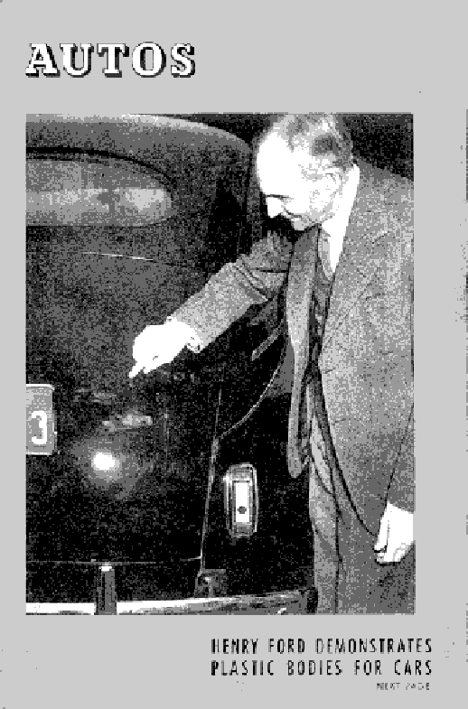
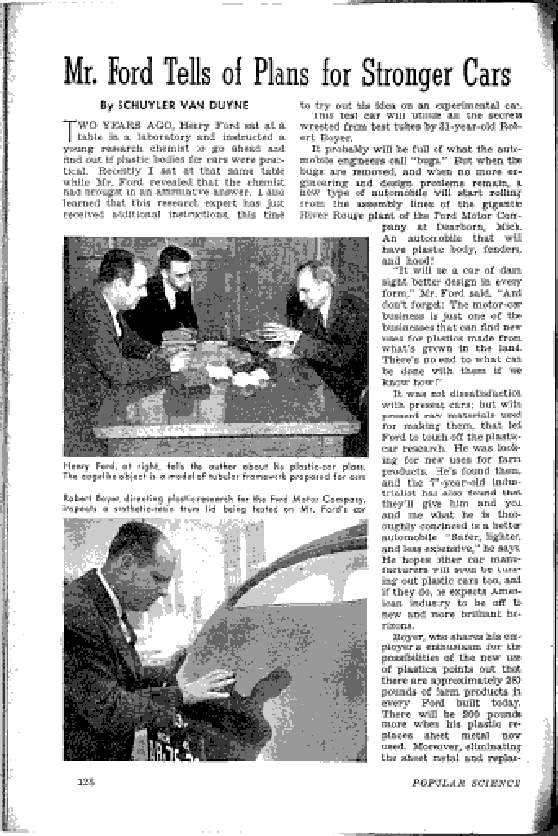
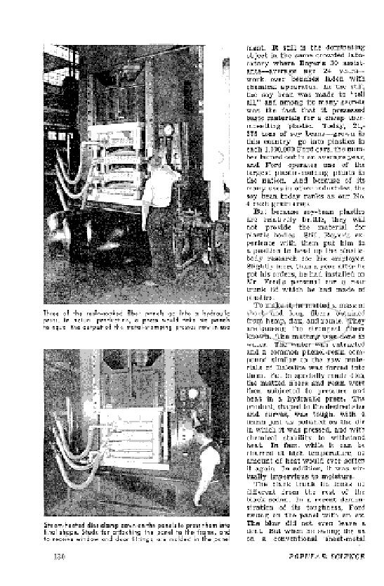
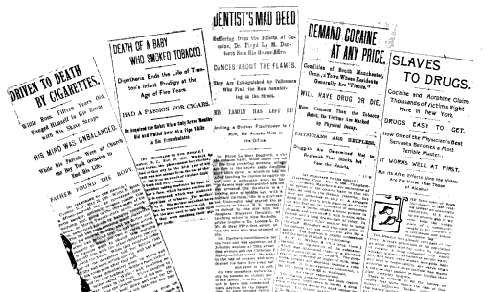
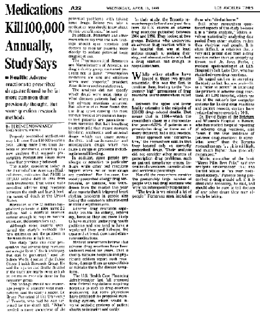
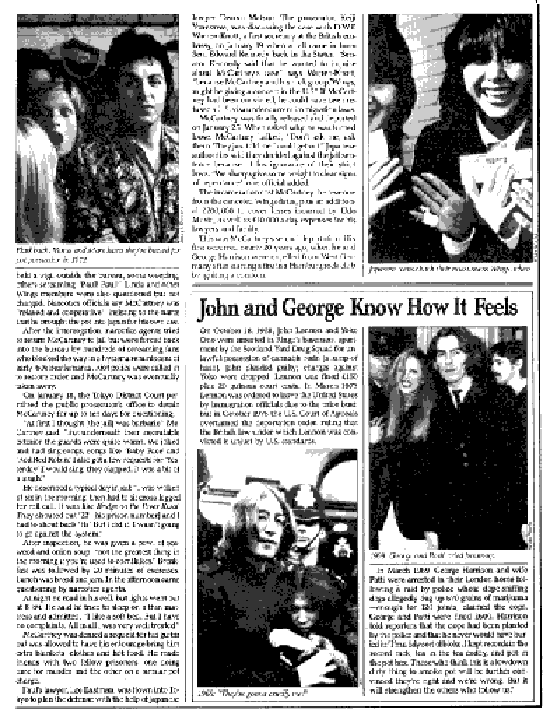
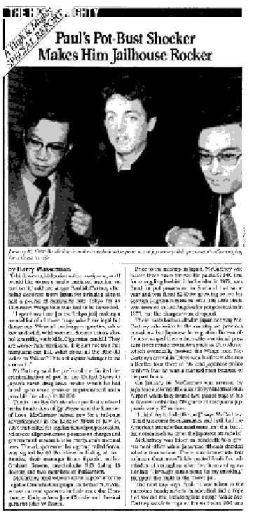

|  |
| |

Visionary Henry Ford didn’t know beans about international politics. His book, The International Jew mistakenly blamed all the world’s Jewish peoples for the money-manipulating schemes (continuing to this day through the autonomous Federal Reserve) of Jewish international banking families like the Warburgs and Rothschilds. Portions from Ford’s diatribe were later excerpted by Adolf Hitler himself in his twisted manifesto, Mein Kampf.
But when it came to soybeans—and hemp—Ford’s vision was a little clearer. In this March, 1941 Popular Science article (several pages of which are shown here), the role of natural soybeans (over fossil fuels) in plastic-making is discussed.
On the magazine’s page 130, however, it is explained that for auto body parts, the overly brittle soybean-derived plastics proved inadequate. A combination of hemp/flax/ramie, offering incredible resiliency, and imperviousness, was tested. We wonder if hemp alone might not have done the job, and if Ford’s inclusion of the other fibers was even necessary? Also, Ford’s use of phenol resin, a coal tar (petrochemical) derivative, as a binder seems to us an unfortunate compromise of his organic ideal just as when shampoo manufacturers, today, put laureth sulfate and propyl alcohol into their “all-natural” herbal formulas.
Yet, imagine the positive environmental impact upon the earth today if Ford’s cars “grown from the soil” had become a mass-production reality, and if his vision of organically-based, rather than coal- or petroleum-based, plastics had become the norm. In addition to the reduction in oil exploration and drilling, oil spills, refinery pollution, etc., countless lives may have been saved in collisions involving autos with such high-strength bodies. There are other health benefits from natural, cellulose-based hemp or soy plastics. Responsibly manufactured plastic drinking cups, eating utensils, food and beverage containers, etc. would not leech toxic chemicals into our food and our bodies as their fossil fuel counterparts do—and natural plastics are 100% biodegradable!
Now, in 1998, other auto makers are picking up Henry Ford’s long lost lead. Germany’s Mercedes Benz, BMW and Volkswagon companies all are experimenting with hemp plastics for their cars.
How many more wasted years must pass before the U. S. government inevitably allows Detroit to follows suit?


The EMPEROR’S .
Classic CLIP
COLLection*
1985-1998
Celebrating 13 Years of Tabloid Archeology
(*By order of the Emperor himself)

Above, more of Hearst’s “gore files.” Seems that almost anything he didn’t like became an assassin of youth!
Commitee on Ways and Means, House Of Representatives, 75th Congress, April-May 1937
The following dialogue, adapted by Tod Mikuriya and Michael Aldrich for a play performed in 1979, was excerpted verbatim from the original house transcripts.
(Committee comes to order, -general shot-
NARRATOR: In April 1937 the U.S. House Committee on Ways and Means of the 75th Congress held hearings for the proposed legislation on the control of marijuana through prohibitive taxation.
Committee Chairman, Robert L. Doughton of North Carolina
CHAIRMAN: The Committee will come to order. The meeting this morning has been called for the purpose of considering H.R. 6385, introduced by me on April 14, 1937, a bill “to impose an occupational excise tax upon certain dealings in marijuana, and to safeguard the revenue therefrom by registry and recording.”
(Chairman holds up report, hands over to page, committee shuffles around.
CHAIRMAN: This bill was introduced by me at the request of the Secretary of the Treasury. Representatives of the Treasury Department will be the first witnesses to be heard on behalf of the proposed legislation.
NARRATOR: Clinton Hester is an Assistant General Counsel for the Department of the Treasury.
(Chairman swears in Hester)
HESTER: Mr. Chairman and members of the Ways and Means Committee, for the past two years the Treasury Department has been making a study of the subject of marijuana, a drug which is found in the flowering tops, seeds, and leaves of Indian hemp, and is now being used extensively by high-school children in cigarettes. Its effect is deadly. I would like to say at this point that we have with us this morning Commissioner Anslinger, of the Bureau of Narcotics, who has had charge of the enforcement of the Harrison Narcotic Act, and who will have charge of the enforcement of this act, if this bill is enacted into law. We also have with us a pharmacologist who is prepared to testify as to the effect of the drug on human beings. We also have an expert chemist, and one of the outstanding botanists in the country, who are prepared to testify with reference to the bill, if you desire to hear them. The leading newspapers of the United States have recognized the seriousness of this problem and many of them have advocated Federal legislation to control the traffic in marijuana. In fact, several newspapers in the city of Washington have advocated such legislation. In a recent editorial, The Washington Times stated:
The marijuana cigarette is one of the most insidious of all forms of dope, largely because of the failure of the public to understand its fatal qualities. The nation is almost defenseless against it, having no Federal laws to cope with it and virtually no organized campaign for combatting it. The result is tragic. School children are the prey of peddlers who infest school neighborhoods. High-school boys and girls buy the destructive weed without knowledge of its capacity for harm, and conscienceless dealers sell it with impunity. This is a national problem, and it must have national attention. The fatal marijuana cigarette must be recognized as a deadly drug and American children must be protected against it.
The purpose of House Resolution 6385 is to employ the Federal taxing power not only to raise revenue from the marijuana traffic, but also to discourage the current and widespread undesirable use of marijuana by smokers and drug addicts and thus drive the traffic into channels where the plant will be put to valuable industrial, medical, and scientific use. In accomplishing this general purpose two objectives should dictate the form of the proposed legislation. First, the development of a scheme of taxation which would raise revenue and which would also render virtually impossible the acquisition of marijuana by persons who would put it to illicit uses without unduly interfering with the use of the plant for industrial, medical, and scientific purposes; and second, the development of an adequate means of publishing dealings in marijuana in order that the traffic may be effectively taxed and controlled. In order to obviate the possibility of an attack upon the constitutionality of this bill, it, like the National Firearms Act, permits the transfer of marijuana to nonregistered persons upon the payment of a heavy transfer tax. The bill would permit the transfer of marijuana to anyone. It would impose a $100 per ounce tax upon a transfer to a person who might use it for purposes which are dangerous and harmful to the public, just as the National Firearms Act permits a transfer to a person who would be likely to put it to an illegal use.
Although the $100 transfer tax in this bill is intended to be prohibitive, as is the $200 transfer tax in the National Firearms Act, it is submitted that it is constitutional as a revenue measure.
This bill would permit anyone to purchase marijuana, as was done in the National Firearms Act in permitting anyone to go buy a machine gun, but he would have to pay a tax of $100 per ounce of marijuana and make his purchase on an official order form. A person who wants to buy marijuana would have to go to the collector and get an order form in duplicate, and buy the $100 tax stamp and put it on the original order form there. We would take the original to the vendor, and keep the duplicate. If the purchaser wants to transfer it, the person who purchases the marijuana from him has to do the same thing and pay the $100 tax. That is the scheme that has been adopted to stop high-school children from getting marijuana.
VINSON: What is the fair market value, per ounce, of marijuana?
HESTER: In its raw state it is about a dollar per ounce, as a drug.
VINSON: I notice in your statement—and I want to say it is a good statement: the gentleman does not have any other kind of a statement when he comes before our committee.
HESTER: I thank you.
CHAIRMAN: Through what channel or agency is this drug in its deleterious form dispensed or distributed? Is it sold by druggists, or at grocery stores?
HESTER: I will answer your question, but I hope you will ask the same question of Mr. Anslinger, because he can speak more authoritatively on that phase of the subject. The flowered tops, leaves, and seeds are smoked in cigarettes.
CHAIRMAN: Is it carried generally by druggists?
HESTER: I do not think so, for this reason. It is very variable. It may affect you in one way and affect me in another way, and then, too, there are very many better substitutes.
CHAIRMAN: And a deleterious use?
HESTER: The smoking of it, yes. You can take the leaves, tops, and seeds and fix them in a way somewhat similar to tobacco. It is just about the same as tobacco: you can smoke it like tobacco.
CHAIRMAN: Just as an illustration, suppose I were in the market for some of this drug: where would I find it?
HESTER: There are about 10,000 acres under cultivation by legitimate producers.
CHAIRMAN: I want to know where it could be bought: where is it being sold?
LEWIS: Where do the victims get it?
REED: I think what the chairman wants to know is how high-school children are able to get it. Is it not true that there are illicit peddlers who hang around the high-school buildings, and as soon as they find out that there is some boy to whom they think they can sell it, they make his acquaintance?
HESTER: Yes. I read in the newspapers not long ago that a place on Twelfth Street was raided, where a lady was selling marijuana.
LEWIS: Do legitimate companies make these cigarettes, or are they made in an illicit manner, like bootleg whiskey used to be made? Do reputable firms make these cigarettes?
HESTER: I would like to refer that question to Commissioner Anslinger.
REED: I would like to make a statement at this point in reference to this question. Some years ago the committee of the House of which I happened to be chairman held a hearing going into the narcotic problem. That was at the time when there was a great deal of talk about heroin, and we devoted a good deal of the time of that hearing to that subject. We had experts there from New York and other parts of the country. At that time they were selling heroin through peddlers to high-school students, particularly to athletes. The peddler was usually a man of some personality, and he would sell the heroin to those tired boys as they came off of the athletic training field. They would say to these boys, “Here is something that will put the pep in you.” They soon had a lot of these boys in these schools developed into addicts. I assume you have the same thing here.
(Committee is rather inattentive during Reed’s statement, Hester has assembled his documents and leaves. Anslinger replaces him and commences to be sworn in, -camera pans-
NARRATOR: We have just heard testimony from Clinton Hester of the Treasury Department. The following witness is Harry J. Anslinger, who is currently the federal government’s chief drug law enforcer.
CHAIRMAN: Mr. Anslinger, the committee will be glad to have a statement from you at this time. Will you state your full name and the position you occupy in the Treasury Department?
ANSLINGER: Mr. Chairman, my name is W.J. Anslinger: I am Commissioner of Narcotics in the Bureau of Narcotics, in the Treasury Department. Mr. Chairman and distinguished members of the Ways and Means Committee, this traffic in marijuana is increasing to such an extent that it has become the cause for the greatest national concern. In medical schools the physician-to-be is taught that without opium medicine would be like a one-armed man. That is true, because you cannot get along without opium. But here we have a drug that is not like opium. Opium has all of the good of Dr. Jekyll and all the evil of Mr. Hyde. This drug is entirely the monster Hyde, the harmful effect of which cannot be measured.
DINGELL: I want to be certain what this is. Is this the same weed that grows wild in some of our Western States which is sometimes called the loco weed?
ANSLINGER: No, sir: that is another family.
DINGELL: That is also a harmful drug-producing weed, is it not?
ANSLINGER: Not to my knowledge; it is not used by humans.
CHAIRMAN: In what particular sections does this weed grow wild?
ANSLINGER: In almost every state in the Union today.
REED: What you are describing is a plant which has a rather large flower?
ANSLINGER: No, sir: a very small flower.
REED: It is not Indian hemp?
ANSLINGER: It is Indian hemp. We have some specimens here. (Anslinger raises stalks from adjacent chair and places them on the table, -long close-up-
VINSON: When was this brought to your attention as being a menace among our own people?
ANSLINGER: About ten years ago-
VINSON: Why did you wait until 1937 to bring in a recommendation of this kind?
ANSLINGER: Ten years ago we only heard about it throughout the Southwest. It is only in the last few years that it has become a national menace. It has grown like wildfire, but it has only become a national menace in the last three years. It is only in the last two years that we have had to send reports about it to the League of Nations.
McCormack: What are its first manifestations, a feeling of grandeur and self-exaltation, and things of that sort?
ANSLINGER: It affects different individuals in different ways. Some individuals have a complete loss of a sense of time or a sense of value. They lose the sense of place. They have an increased feeling of physical strength and power. I see people will fly into a delirious rage, and they are temporarily irresponsible and may commit violent crimes. Other people will laugh uncontrollably. It is impossible to say what the effect will be on any individual. Those research men who have tried it have always been under control. They have always insisted upon that.
McCORMACK: Is it used by the criminal class?
ANSLINGER: Yes, it is. It is dangerous to the mind and body, and particularly dangerous to the criminal type, because it releases all of the inhibitions.
DINGELL: What is the price of marijuana?
ANSLINGER: The addict pays anywhere from 10 to 25 cents per cigarette. It will be sold by the cigarette. In illicit traffic the bulk price would be around $20 per pound. Legitimately, the bulk is around $2 per pound.
DINGELL: How does that compare with the price of opium or morphine? Do the class of people who use this drug use it because it is cheaper than the other kinds?
ANSLINGER: That is one reason: yes, sir. To be a morphine or heroin addict it would cost you from $5 to $6 a day to maintain your supply. But if you want to smoke a cigarette you pay 10 cents.
McCORMACK: Just one of them will knock the socks off of you.
ANSLINGER: One of them can do it.
McCORMACK: Some of those cigarettes are sold much cheaper than 10 cents, are they not? In other words, it is a low-priced cigarette, and that is one of the reasons for the tremendous increase in its use.
ANSLINGER: Yes: it is low enough in price for school children to buy it.
McCORMACK: And they have parties in different parts of the country that they call “reefer parties.”
ANSLINGER: Yes, sir: we have heard of them, and know of them.
McCORMACK: Another thing is that they will not be able to get other kinds of dope, but they do have an opportunity to get this marijuana, which causes it to be so much sought after and used in the community.
ANSLINGER: That is true, and the effect is just passed by word of mouth, and everybody wants to try it.
CHAIRMAN: Mr. Anslinger, at this time the committee would like to thank you for your time and call upon another witness before our adjournment today. I will, however, ask for you to be available to this committee for any further testimony during the remainder of hearings on this matter.
(Anslinger nods and proceeds to assemble his visual aids. Chairman engages in hand gesturing while the rest of the hearing room shuffles about.—general pan shots.
CHAIRMAN: The committee will be in order. Yesterday the chairman was informed there was some disagreement in connection with some of the provisions of the bill, by the people engaged in the processing of seed or some objection to parts of the bill we have under consideration. The chairman suggested to Mr. Hester that we have a conference with the people representing that industry to see if it was possible to reach an agreement and remove the objection they had by some change or modification of the bill, but which would warrant them in withdrawing their objection. We will be glad to hear any statement from representatives of this industry at this time.
(Chairman looks impatiently into the chamber, witness approaches to be sworn,
NARRATOR: The committee will now hear testimony from Raymond G. Scarlett, representing the William G. Scarlett Corp. of Baltimore, MD.
SCARLETT: Mr. Chairman, our company handles a considerable quantity of hempseed annually for use in pigeon feeds. That is a necessary ingredient in pigeon food because it contains an oil substance that is a valuable ingredient of pigeon feed, and we have not been able to find any seed that will take its place. If you substitute anything for the hemp, it has a tendency to change the character of the squabs produced: and if we were deprived of the use of hempseed, it would affect all of the pigeon producers in the United States, of which there are upwards of 40,000.
CHAIRMAN: Does that seed have the same affect on pigeons as the drug has on individuals?
(The chairman’s questions draws laughs and smirks throughout the chamber, chairman looks impatiently at his watch, pounds his gavel, -close-up shot on the witness
SCARLETT: I have never noticed it. It has a tendency to bring back the feathers and improve the birds. We are not interested in spreading marijuana, or anything like that. We do not want to be drug peddlers.
CHAIRMAN: Well, at this time the committee will adjourn until 10:00 tomorrow morning. We will continue our discussion with Mr. Scarlett at that time.
(Chairman pounds gavel, chamber files out, -general shots with close-ups on committee members conferring with each other, and close-up on Chairman waving Scarlett over.
NARRATOR: That will conclude today’s proceedings on the Marijuana Tax Act.
(camera break)
We now continue hearings with Dr. William C. Woodward, Legislative Counsel of the American Medical Association.
CHAIRMAN: The committee will be in order. The meeting this morning is for the purpose of continuing hearings on House Resolution 6385. Dr. Woodward, will you come forward and give your name and address and the capacity in which you appear.
WOODWARD: Mr. Chairman and gentlemen, my name is Dr. William C. Woodward, representing the American Medical Association. The address is 535 North Dearborn St., Chicago, Illinois.
CHAIRMAN: Do you appear in the capacity of a medical expert, a legal expert, or a legislative expert, or in all three capacities?
WOODWARD: My profession is that of a practitioner of medicine and of legal medicine. I have combined the two. If you want to class me as an expert, you might class me as a medical-legal expert. I have lectured on legal medicine as a lawyer and doctor.
CHAIRMAN: Thank you, Dr. Woodward, please continue.
(pause, as Woodward organizes)
WOODWARD: There is nothing in the medicinal use of Cannabis that has any relation to Cannabis addiction. I use the word “Cannabis” in preference to the word “marijuana”, because cannabis is the correct term for describing the plant and its products. The term “marijuana” is a mongrel word that has crept into this country over the Mexican border and has no general meaning, except as it relates to the use of Cannabis preparations for smoking. It is not recognized in medicine, and hardly recognized even in the Treasury Department. Marijuana is not the correct term. It was the use of the term “marijuana” rather than the use of the term“Cannabis” or the use of the term “Indian hemp” that was responsible, as you realized, probably, a day or to ago, for the failure of the dealers in Indian hempseed to connect up this bill with their business until rather late in the day. So, I shall use the word “Cannabis”, and I should certainly suggest that if any legislation is enacted, the term used be “Cannabis” and not the mongrel word “marijuana”.
I say the medicinal use of Cannabis had nothing to do with Cannabis or marijuana addiction. In all that you have heard here thus far, no mention has been made of any excessive use of the drug by any doctor or its excessive distribution by any pharmacist. And yet the burden of this bill is placed heavily on the doctors and pharmacists of the country: and I may say very heavily, most heavily, possibly of all, on the farmers of the country.
My interest is primarily, of course, in the medical aspects. We object to the imposing of an additional tax on physicians, pharmacists, and others, catering to the sick; to require that they register and reregister; that they have special order forms to be used for this particular drug, when the matter can just as well be covered by an amendment to the Harrison Narcotic Act.
If you are referring to the particular problem, I object to the act because it is utterly unsusceptible of execution, and an act that is not susceptible of execution is a bad thing on the statute books.
CHAIRMAN: If the use of marijuana as a dope has increased until it has become serious and a menace to the public, as has been testified here—and the testimony here has been that it causes people to lose their mental balance, causes them to become criminals so that they do not seem to realize right from wrong after they become addicts of this drug—taking into consideration the growth in its injurious effects and its diminution in its use so far as any beneficial effect is concerned, you realize, do you not, that some good may be accomplished by these proposed legislation?
WOODWARD: Some legislation: yes, Mr. Chairman.
CHAIRMAN: If that is admitted, let us get down to a few concrete facts. With the experience in the Bureau of Narcotics and with the State Governments trying to enforce the laws that are the States’ statute books against the use of this deleterious drug, and the Federal Government has realized that the State laws are ineffective, don’t you think some Federal legislation necessary?
WOODWARD: I do not.
CHAIRMAN: You do not?
WOODWARD: No. I think it is the usual tendency to —
CHAIRMAN: I believe you did say in response to Mr. Cooper that you believed that some legislation or some change in the present law would be helpful. If that be true, why have you not been here before this bill was introduced proposing some remedy for this evil?
WOODWARD: Mr. Chairman, I have visited the Commissioner of Narcotics on various occasions -
CHAIRMAN: That is not an answer to my question at all.
WOODWARD: I have not been here because…
CHAIRMAN: You are here representing the medical association. If your association has realized the necessity, the importance of some legislation—which you now admit—why did you wait until this bill was introduced to come here and make mention of it? Why did you not come here voluntarily and suggest to this committee some legislation?
WOODWARD: I have talked these matters over many times with the -
CHAIRMAN: That does not do us any good to talk matters over. I have talked over a lot of things. The states do not seem to be able to deal with it effectively, nor is the Federal Government dealing with it at all. Why do you wait until now and then come in here to oppose something that is presented to us. You propose nothing whatever to correct the evil that exists.
Now, I do not like to have a round-about answer to that question.
WOODWARD: We do not propose legislation directly to Congress when the same end can be reached through one of the executive departments of the government.
CHAIRMAN: You admit that it has not been done. You said that you thought some legislation would be helpful. That is what I am trying to hold you down to. Now, why have you not proposed any legislation? That is what I want a clear, definite, clean-cut answer to.
WOODWARD: In the first place, it is not a medical addiction that is involved and the data do not come before the medical society. You may absolutely forbid the use of Cannabis by any physician, disposition of Cannabis by any pharmacist in the country, and you would not have touched your Cannabis addiction as it stands today, because there is no relation between it and the practice of medicine or pharmacy. It is entirely outside of these two branches.
CHAIRMAN: If the statement that you have just made has any relation to the question that I asked, I just do not have the mind to understand it; I am sorry.
WOODWARD: I say that we do not ordinarily come directly to Congress if a department can take care of the matter. I have talked with the Commissioner, with Commissioner Anslinger.
CHAIRMAN: If you want to advise us on legislation, you ought to come here with some constructive proposals, rather than criticism, rather than trying to throw obstacles in the way of something that the Federal Government is trying to do. It has not only an unselfish motive in this, but they have a serious responsibility.
WOODWARD: We cannot understand yet, Mr. Chairman, why this bill should have been prepared in secret for two years without any intimation, even, to the profession, that it was being prepared.
CHAIRMAN: Is not the fact that you were not consulted your real objection to this bill?
WOODWARD: Not at all.
CHAIRMAN: Just because you were not consulted?
WOODWARD: Not at all.
CHAIRMAN: No matter how much good there is in the proposal?
WOODWARD: Not at all.
CHAIRMAN: That is not it?
WOODWARD: Not at all. We always try to be helpful.
VINSON: The fact that they took that length of time in the preparation of the bill, what has that to do with the merits of the legislation?
WOODWARD: The legislation is impracticable so far as enforcement is concerned, and the same study devoted to state legislation with 44 state legislatures in session this year would have produced much better results.
DINGELL: The impression I gain from your last remark is that it is only the medical profession that is interested in this bill; but what about the 125,000,000 people in this country? This is not only a bill that the medical profession is interested in, or that the AMA is interested in, but all of the people are interested in it. Incidentally, I would like to ask how many doctors are members of the AMA.
WOODWARD: Approximately 100,000.
DINGELL: That many are members of the AMA?
WOODWARD: Yes, sir.
DINGELL: How many doctors are there in the United States?
WOODWARD: Probably 140,000 or 150,000, or there may be 160,000.
DINGELL: Are we to understand that the medical men of the state of Michigan, or the medical profession in Wayne County, or the medical association of Detroit, are opposed to this legislation?
WOODWARD: I do not know. No medical man would identify this bill with a medicine until he read it through, because marijuana is not a drug.
DINGELL: Please tell me this: What effort has been made in my state through the medical association to protect the school children and the unfortunate people who are falling victims to this habit? I ask that question since we are talking about controlling it through the states. I want to know what has been done by the State of Michigan and the members of the medical profession to give protection intended by this bill.
WOODWARD: It is, of course, impossible for me to say just what has been done in any particular state; but in the Michigan laws of 1931, chapter 173, they do regulate the production and distribution of Cannabis indica.
DINGELL: What kind of regulation is that?
WOODWARD: I do not have the law here.
DINGELL: Can you tell me whether that legislation was at that time sponsored by the medical association of my state?
WOODWARD: I do not know. I cannot carry all of these details in my mind. You understand that marijuana is simply a name given Cannabis. It is a mongrel word brought in from Mexico. It is a popular term to indicate Cannabis, like “coke” is word to indicate cocaine, and as “dope” is used to indicate opium.
DINGELL: We know that it is a habit that is spreading, particularly among youngsters. We learn that from the pages of the newspapers. You say that Michigan has a law regulating it. We have a state law, but we do not seem to be able to get anywhere with it, because, as I have said, the habit is growing. The number of victims is increasing each year.
WOODWARD: There is no evidence of that.
DINGELL: I have not been impressed by your testimony here as reflecting the sentiment of the high-class members of the medical profession in my state. I am confident that the medical profession in the state of Michigan, and in Wayne County particularly, or in my district, will subscribe wholeheartedly to any law that will suppress this thing, despite the fact that there is a $1 tax imposed.
WOODWARD: If there was any law that would absolutely suppress the thing, perhaps that is true, but when the law simply contains provisions that impose a useless expense, and does not accomplish the result -
DINGELL: That is simply your personal opinion. That is kindred to the opinion you entertained with reference to the Harrison Narcotics Act.
WOODWARD: If we had been asked to cooperate in drafting it -
DINGELL: You are not cooperating in this at all.
WOODWARD: As a matter of fact, it does not serve to suppress the use of opium and cocaine.
DINGELL: The medical profession should be doing its utmost to aid in the suppression of this curse that is eating the very vitals of the nation.
WOODWARD: They are?
McCORMACK: Are you not simply piqued because you were not consulted in the drafting of the bill?
WOODWARD: That is not the case at all. I said, in explaining why I was here, that the measure should have been discussed and an expression of opinion obtained before the Treasury Department brought the bill before the Congress of the United States, so that it would be in a form that would be acceptable, with as few differences of opinion as possible.
McCORMACK: With all due respect to you and for your appearance here, is it not a fact that you are peeved because you were not called in and consulted in the drafting of the bill?
WOODWARD: Not in the least. I have drafted too many bills to be peeved about that.
McCORMACK: There is no question but that the drug habit has been increasing rapidly in recent years.
WOODWARD: There is no evidence to show whether or not it has been.
McCORMACK: In your opinion, has it increased?
WOODWARD: I should say it has increased slightly. Newspaper exploitation of the habit has done more to increase it than anything else.
McCORMACK: It is likely to increase further unless some effort is made to suppress it.
WOODWARD: I do not know. The exploitation tempts young men and women to venture into the habit.
McCORMACK: At any event, it is a drug.
WOODWARD: Cannabis indica is a drug; yes.
(During the course of Woodward’s testimony, committee members present have become impatient and restless over witnness’ calm resistance:
CHAIRMAN: The public authorities dealing with this evil, the state authorities and Federal authorities, say that they need further legislation in order to protect the people from its insidious influence and effects. Under these conditions, do you not believe that Congress should try to do something?
WOODWARD: I think something should be done, but it is only a question of what should be done.
CHAIRMAN: You stated a while ago that you believed this law would be ineffective. Of course, the law against carrying concealed weapons, designed to protect people against criminals is not entirely effective, but you would not advocate the repeal of the law. The laws against prostitution and murder are not entirely effective, but without legislative control we would be at the mercy of the criminal class, and we would have no civilization whatever.
(Chairman looks disgustedly at witness, -close-up, backing away-)
We thank you for your appearance before the committee. We will now take a recess to meet tomorrow at 10:00 in executive session.
(Chairman pounds gavel, committee members glare at Woodward, remainder of chamber files out slowly, -360 shot-)
NARRATOR: The House Ways and Means Committee approved the Marijuana Tax Act and sent it to a Senate Subcommittee, which after one day of hearings also approved it.
On June 14, 1937, the bill came before the full House. Only four congressmen asked for an explanation of the bill’s provisions. What they received was an account of the criminal acts perpetrated by marijuana use from a member of the Ways and Means Committee. The act passed without a roll call. The question of whether the American Medical Association agreed with the bill was answered by Congressman Vinson.
VINSON: (voice only) Our committee heard testimony of Dr. William Wharton who not only gave this measure his full support, but also the approval from the American Medical Association which he represented as legislative counsel.
NARRATOR: The act passed Congress with little debate and even less public attention.
It stands today as a monument to uncontroversial law.



William C. Burrows, Senior Scientist, John Deere & Co.:
“Energy Development From Biomass -
“Agricultural residues, surplus agricultural production, forest residues and the plant material growing on marginal lands are the largest portion of what is collectively referred to as biomass. It represents a sizable and renewable energy resource, equivalent to a part of the total U.S. petroleum use.
“We consider that biomass will be used as an energy source in the future. Machinery is currently in production and available to processors to handle the growing and harvesting of biomass for energy.
“Maybe I should emphasize that a little more because it is easy to pass over this in the testimony. We think the technology, the machinery for using this material is here now. It can be bought in the market place.”
Donald N. Duvich, Director, Dept. of Corn Breeding, Pioneer Hybrid International, Johnston, Iowa:
(Sen. Bayh questioning Mr. Duvich) “Is it fair to assume that if the Nation determines that it is in the national interest to develop an alternative source of energy that is not petroleum-based, to take advantage of the productive capacity of the American farmer that, whether it is agriculture research or university research, that it is entirely possible that a product can be grown that has significantly higher cellulosic content than even alfalfa?”
(Duvich) “It may well be [but] cultivation has been pointed towards almost anything except cellulose. I think it could well be by either looking into the crops that we now grow or perhaps by looking towards the new crops that we have not yet considered we would find things which could produce much more cellulose per acre.”
George T. Tsao, Professor at Purdue University:
“Recently, we at Purdue University have worked out a new process which gives 100% yield of glucose from available cellulose at a low cost ... solvent A is first used to remove the third major component of cellulosic materials, besides cellulose and lignin, called hemicellulose. The solid residue containing cellulose and lignin is then treated with another solvent B which dissolves the cellulose but not the lignin. This approach which is simple in concept will obviously remove the two major obstacles to cellulose conversion.
“Glucose can be fermented by yeast to produce alcohol and can also be processed to produce many chemicals replacing petroleum...
“Some of these are direct consumer products and some of these are industrial intermediates which in turn can be processed into even a larger number of products. From the other two major components of cellulosic materials, namely hemicellulose and lignin, one can also make a large number of petroleum sparing products...complete processing industries can be developed based upon the ultimate raw material, cellulosic materials, which is a valuable renewable resource.
“The ‘land set aside’ program costs our government large sums of tax money. The acreage can be used for producing cellulosic materials sold at $30 per ton. . . .Our country is blessed with the largest and the richest land mass in the world. It is a shame to all of us, today we will pay our farmers for not farming their land; while we spend tens of billions of dollars every year to by foreign oil...”
95th. Congress U.S. Industry Public Witness Panel Testimony
Inter-Industry Emission Control Program (Ford, ARCO, Mobil, and Standard Oil Companies):
Gasoline From Methanol
“...engineering problems have been identified in this paper that will require solutions before methanol can be used as reliable as an automotive fuel. Another approach, which would circumvent the engineering problems, is conversion of methanol to gasoline ... Using a zeolitic catalyst nearly 90 % yields of product with the composition, octane number, boiling range, and other specifications of high-quality gasoline can be obtained.”
Methanol From Synthesis Gas—
(Mobil Oil Co., John J. Wise): “Today, I would like to tell you about a new process invented by Mobil scientists to convert methanol into high-octane gasoline.
“The gasoline is 96 octane, unleaded, and chemically similar to gasoline made from crude oil. It contains no sulfur, nitrogen, or other impurities... What the Mobil process does essentially is to wring out the water and rearrange the remaining hydrogen and carbon atoms into the concentrated, high energy fuel we know as gasoline. Each gallon of gasoline has 95% of the energy contained in the 2 gallons of methanol it was made from.
“Our process is relatively simple, and uses equipment of the general type used routinely in the oil industry.
“...We estimate that 2 barrels of 84 gallons of gasoline can be made from 1 ton of raw Wyoming subbituminous coal. The final scale up could be to commercial-size facility, which could require another six years to get on stream. The technology is so well advanced, however, that the lead time could be considerably shortened if necessary.”
[Sen.Bayh] “You go directly from methanol to gasoline?”
[Wise] “Yes; essentially, senator,our argument is that there is no need to put alcohol into gasoline ... we have a process that effectively converts alcohols into gasoline with 95% thermal efficiency...
“We believe the type of alcohol that would be cheapest is methanol made from coal...”
[Bayh] “...one thing we can be certain of is that as the quantity of petroleum gets less, the cost is going to go up. There has been a very close relationship, had there not, in the increased cost of coal and petroleum? If you take the escalating cost of coal and compare that with grain or farm produce, there really hasn’t been the same history... Do you get rid of the sulfur sulfur problem and by-products?”
[Wise] “Yes; sulfur and all its impurities are...scrubbed out.”
[Bayh] “Is it cleaner burning gasoline than we have now or would we have the same exhaust problem?”
[Wise] “It is actually cleaner burning but you would still need the catalytic converter to clean it up.”
And on goes the madness…
the authorized on-line version of Jack Herer’s “The Emperor Wears No Clothes”
| previous page | Appendix | next page |
|
 |
 |
 |
 |